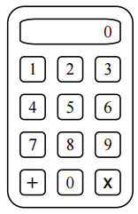

On a calculator, there are numbers from 0 to 9 and signs of two actions $($see the figure$)$. First, the display shows the number 0. You can press any key. The calculator performs the actions in the sequence of clicks. If the action sign is pressed several times, the calculator will only remember the last push. The Scattered Scientist pressed a lot of buttons in a random sequence. Find approximately the probability with which the outcome of the resulting chain of actions is an odd number?

We will say that the scientist has done n steps if he has typed n numbers, and between them, n - 1 times performed some arithmetic operations. Let $p_n$ denote the probability that after n steps on the calculator there will be an odd number, and express $p_{n + 1}$ in terms of $p_n$.
If the last action was multiplication, then the result will be odd only if both factors are odd; the probability of this is ½ $p_n$.
If the last action was addition, the result will be odd if the last term differs from the penultimate in terms of evenness and oddness; the probability of this is ½.
The last action can be either multiplication or addition, and both of these variants are equally possible. Therefore, the formula of total probability gives: $P_{n + 1} = 1/2 \times 1/2 + 1/2 \times 1/2 p_n = 1/4 + 1/4 p_n$. Rewriting this equation in the form $p_{n + 1} - 1/3 = ¼ (p_n - 1/3)$, we see that as n increases by 1, the difference $p_n - 1/3$ decreases by 4 times. Hence, $p_n$ is close to 1/3 for large n.
1/3.
One can find the exact value of $p_n$. Obviously, $p_1$ = ½. Hence,